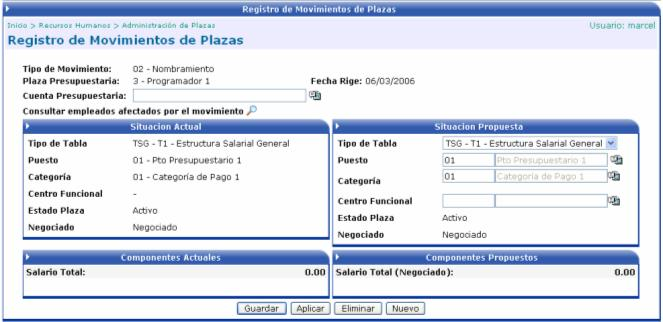

En esta opción se harán los registros de movimientos de plaza. Para esto se debe de seleccionar el tipo de movimiento, una plaza presupuestaria y la fecha desde del movimiento de la plaza:
Luego de guardada la información anterior, se mostrarán los datos de la acción asociada al tipo de movimiento, habilitando los campos permitidos para modificar, según se parametrizó en el tipo de movimiento. Adicionalmente se debe de ingresar la cuenta presupuestaria que se va a ver afectada:

Al aplicar la acción, dependiendo del movimiento, se va a modificar la línea del tiempo de la plaza o el estado de la misma.